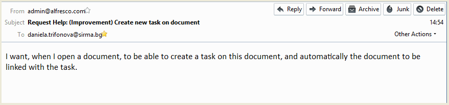

- In the Main menu there is a Help menu (1). From the Help menu the user could select "Help request" (2).

- When the user selects "Help Request" a blank form is opened where the user enters to following details of the request:
- Subject (1) - a short information about the problem
- Type (2) - selectable from a drop down menu from the following: Question, Bug, Improvement
- Description (3) - detailed description of the problem
- When the user is ready with the request he/ she selects Send (4) or Cancel.

- The system displays information for the successful operation. The user could place another request, using the empty form.

- An e-mail is generated to the Support administrator with the following template:
- From: {e-mail address of the user who generated the request}
- To: {the e-mail address of the support administrator}
- Subject: {Issue Type of the request} {Subject of the request}
- Message body: {Description of the request}

The "Help Request" form is integrated with Jira. (NOT READY)
- When the user sends the request, a jira issue is of the respective type is created automatically.
- The reporter of the issue is the user who generated the request.
- The assignee automatically is selected to be a first level help desk Sirma employee.